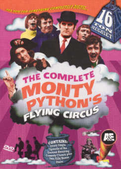

To Know Me
To Contact Me
Solutions
Home
Introduction
To Know Me
To Contact Me
Solutions
Home
Introduction
Python was created in the early 1990s by Guido van Rossum at Stichting Mathematisch Centrum (CWI) in the Netherlands as a successor of a language called ABC. Guido remains Python's principal author, although it includes many contributions from others.
Guido van Rossum
In 1995, Guido continued his work on Python at the Corporation for National Research Initiatives (CNRI) in Reston, Virginia where he released several versions of the software.
In May 2000, Guido and the Python core development team moved to BeOpen.com to form the BeOpen PythonLabs team. In October of the same year, the PythonLabs team moved to Digital Creations, which became Zope Corporation. In 2001, the Python Software Foundation (PSF) was formed, a non-profit organization created specifically to own Python-related Intellectual Property. Zope Corporation was a sponsoring member of the PSF.
The language was released in I991. Python got its name from a BBC comedy series from seventies- “Monty Python‟s Flying Circus”.

Monty Pythons Flying Circus poster
The language is used by companies in real revenue generating products, such as: